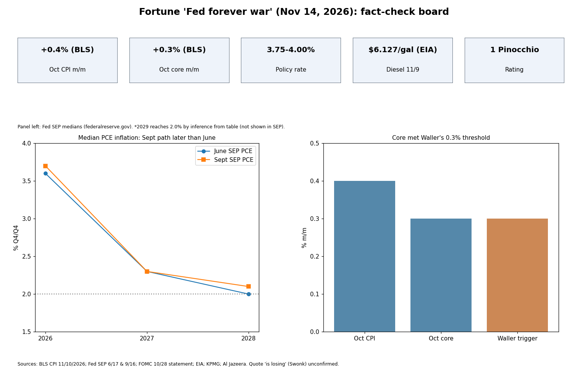

The piece is largely accurate (1 Pinocchio). Core numbers check out: October CPI +0.4% m/m, core +0.3% (BLS, Nov 10), policy rate 3.75-4.00% (FOMC Oct 28), diesel $6.127 (EIA, +$2.29 y/y). Waller, Goolsbee and Warsh quotes are confirmed via press reports.
| Claim | Finding | Confidence |
|---|---|---|
| Inflation above 2% target for nearly six years | Plausible (PCE above 2% since ~2021); not checked series-by-series | Medium |
| Fed Sept projections put 2% return in 2029, vs 2028 in June | Verified in SEP tables: June PCE 2.0% in 2028; Sept 2.1% in 2028, 2.0% longer run. 2029 is an inference, SEP shows no 2029 column | Medium-high |
| Policy rate 3.75%-4.00% | Verified: FOMC 10/28/2026 held at 3-3/4 to 4, vote 10-2 (Cook, Hammack wanted a hike) | High |
| October CPI hotter than expected, spreading beyond energy | Verified: headline +0.4% (exp 0.3), core +0.3% (exp 0.2); energy only +0.7% m/m (BLS 11/10) | High |
| Waller: 50bp should be considered if core >=0.3%; 'Hiking only 25 bp would put our credibility at risk' | Verified via investinglive/press; core came in at 0.3%. Primary text not fetched | Medium-high |
| Goolsbee 'borderline disturbing'; 'got work to do ... reestablish its credibility' | Verified via CNBC/Quartz/investinglive reports of PBS interview | Medium-high |
| Logan: rate too low, 'more rapidly' | Supported: Reuters 10/30 and 11/11 reports she wants at least two more hikes, possibly faster. Exact wording not verified | Medium |
| Warsh: inflation is a 'choice' | Verified: April 21 confirmation hearing, repeated as chair. Article's 'not excused by shocks' gloss is interpretive | Medium-high |
| Swonk: 'Fed is losing its inflation fighting credibility' | NOT confirmed. KPMG Dec 2025 said 'risks losing'; Nov 10 2026 KPMG note quotes her only as 'Hawks at the Fed are gaining traction.' Possibly from another note | Low |
| Trump: 'We're just keeping it the status quo'; backed off combat threats but rejected negotiations | Quote verified (Nov 9 briefing, Al Jazeera). Rejecting negotiations not confirmed; Trump also said war 'effectively over' | Medium |
| Diesel/refined fuel supplies tight | Supported: EIA diesel $6.127/gal 11/9/2026, +$2.29 y/y | High |
| Hormuz closure, attacks on energy infrastructure, exports rebounded under US protection | Hormuz still heavily restricted per Newsweek via search; export rebound not independently checked | Low-medium |
| AI hyperscaler spending running GDP hot | Not checked (no BEA data pulled): not checkable here | n/a |
Answer: 1 Pinocchio. Key values: Oct 2026 m/m figures above. Confidence medium-high: several quotes verified only through secondary reports.